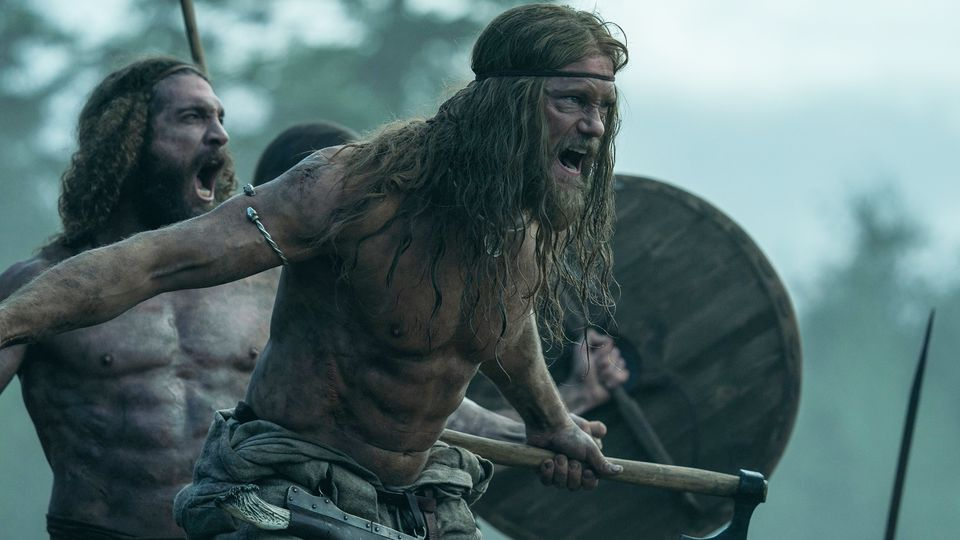
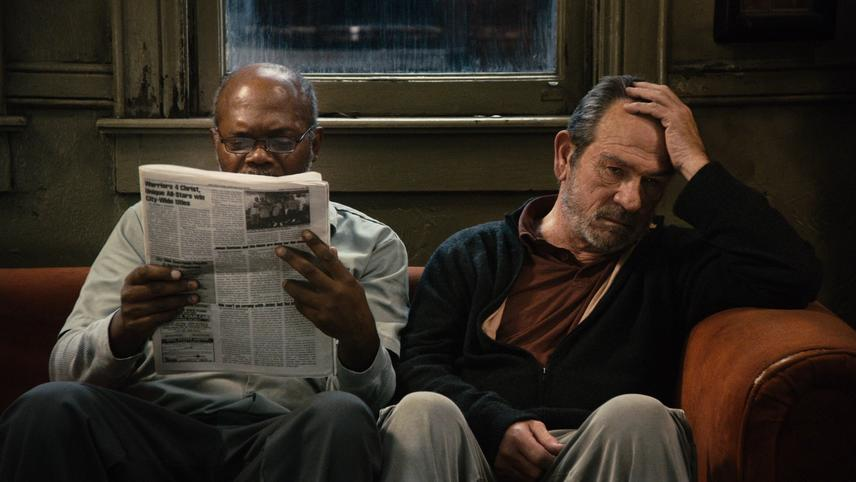
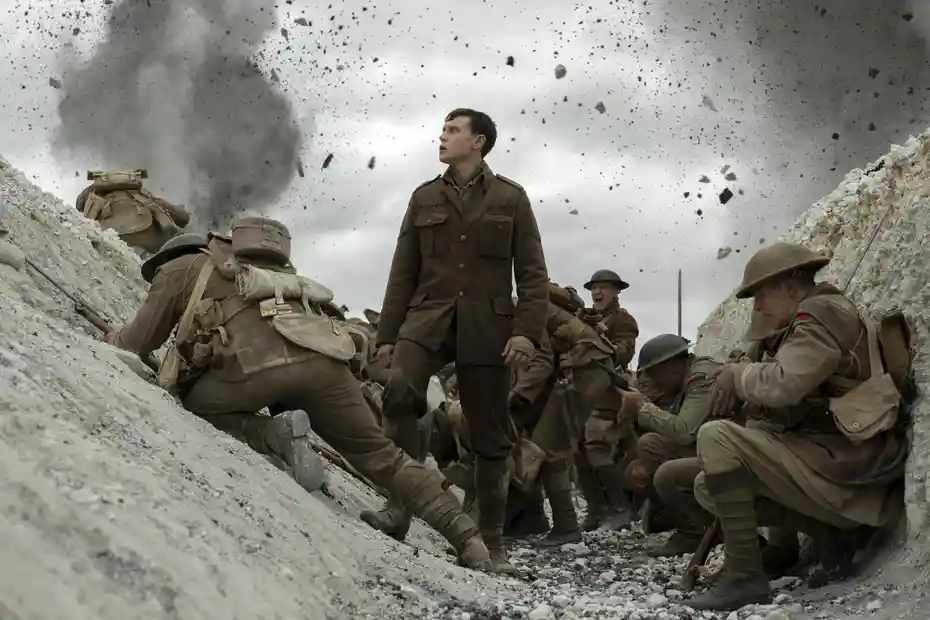

I enjoy all kinds of movies from silly to more thoughtful. Here's a few I like.
The Northman is a viking movie based on the tale of Amleth which was one of the inspirations for Shakespears Hamlet.
The Sunset Limited is a film starring and focusing on Samuel L Jackson and Tommy Lee Jones and the characters White and Black. It is about their opposing views of life, one with a calculated nihilism and the other with faith in a higher power.
1917 is a tale about two British soldiers in World War One with a task to get a message to call off an attack from a company of men that are pushing too far into German lines into a trap.
